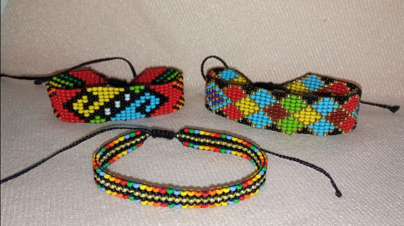
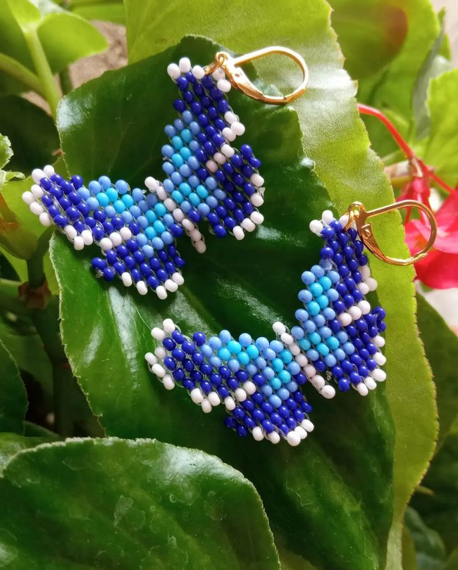
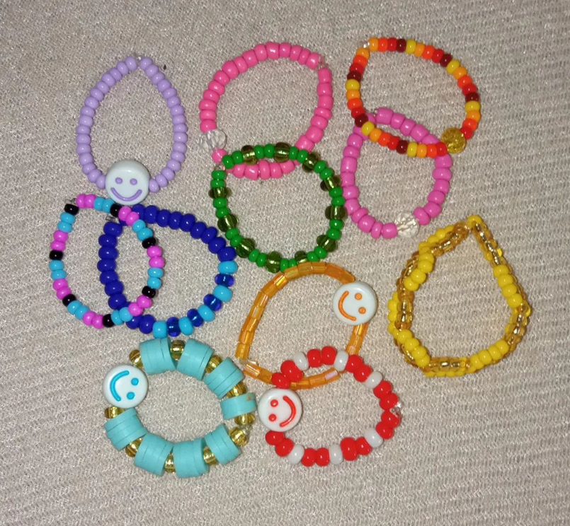

Manillas
Descripción:
Descubre la elegancia y el encanto artesanal de nuestras exquisitas manillas hechas a mano con mostacillas.
Pulseras

Descripción:
Nuestras pulseras son mucho más que accesorios; son piezas de arte que cuentan historias y capturan momentos.
Aretes
Descripción:
Estos aretes son más que simples accesorios; son obras de arte que reflejan tu estilo y personalidad.
Anillos
Descripción:
Lleva contigo un pedacito de arte artesanal con nuestros anillos en mostacilla y destaca en cualquier ocasión.
Collares
Descripción:
Entra en el mundo de la moda con nuestros collares de mostacilla y descubre cómo un toque de artesanía puede elevar tu estilo a nuevas alturas.
Llaveros
Descripción:
Cada llavero está elaborado a mano con delicadas mostacillas que se entrelazan en patrones únicos, creando una obra de arte en miniatura.